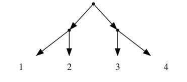
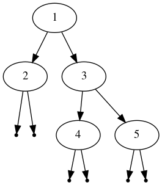
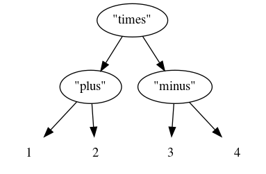

Computer Science 3MI3 – 2020 homework 1
Implementing trees in Scala
Table of Contents
- Introduction
- Boilerplate
- Part 0.1: Installing Scala [0 points]
- Part 0.2: Basic Scala programming [0 points]
- Part 1: Representations of two tree types [20 points]
- Part 2: Flattening trees to lists [20 points]
- Part 3: Elements of a
Tree[Int]in order [20 points] - Part 4: Trees which describe structure [10 points]
- Part 5: Flattening structure trees [bonus 20 points]
Introduction
Scala is a purely object-oriented language on the JVM, and in addition to object-oriented abstractions it fully supports the abstractions of functional programming. We are interested in it because of this functional programming support.
Herein we implement several types of trees,
the de facto example of an algebraic datatype,
along with flatten-ing functions
which convert those trees to the less structured type of lists.
Boilerplate
Submission procedures
:TODO:
Proper conduct for coursework
:TODO:
Part 0.1: Installing Scala [0 points]
In this course, we will be targetting
- Scala version 2.13 and
- Ammonite, an “improved” Scala REPL (read, evaluate, print loop), version 1.7.1,
as used in the lolhens/ammonite Docker image.
If there is any update to the Docker image, or if fir any other reason we change our targeted versions, we will make an announcement on the homepage.
All of that said, any recent version of Scala and Ammonite should suffice for our purposes; it is unlikely we will be using any features which could have compatability issues. You may install whatever is most convenient on your system, and later run tests in the Docker image to verify there are no compatability issues.
So, we recommend whatever installation method that seems appropriate for your operating system, and we link to guides to get you started below.
Installation guides
- The Ammonite homepage.
- Chapter 2 of
the online “Hands-on Scala”, titled “Setting Up”.
- “Hands-on Scala”, by Li Haoyi, is a very recent book on Scala using Ammonite. Its first 5 chapters are free to read online.
Part 0.2: Basic Scala programming [0 points]
Some basic tutorial on Scala will be given in an upcoming lecture, and also in the tutorials, and should provide you with the knowledge you need to complete this homework.
In the meantime, there are numerous useful guides online which can get you started. In particular, the introductory chapters of the aforementioned “Hands-on Scala”, which are freely available online.
Part 1: Representations of two tree types [20 points]
In Scala, implement the following types.
- The type of unordered binary trees which,
given an arbitrary type
A, carry elements ofAin their leaves (nodes without children) only. Call this typeLeafTree. - The type of unordered binary which,
given an arbitrary type
A, carry elements ofAon each node. Call this typeBinTree.
There are multiple ways you could implement these types in Scala,
and we will not force you to choose a particular implementation here.
But we recommend implementing them using sealed traits and case class-es,
as discussion in “Hands-on Scala”
section 5.1.
case class-es in Scala are used to implement algebraic datatypes,
which you may have seen in Haskell
data LeafTree a = Leaf a | Branch (Tree a) (Tree a)
or Elm
type LeafTree a = Leaf a | Branch (Tree a) (Tree a)
The type LeafTree on Int represents trees such as

While the type BinTree on Int represents trees such as

Part 2: Flattening trees to lists [20 points]
Implement a function named flatten for our two tree types
defined avoid, each of which convert the trees to lists,
discarding the tree structure.
Note that we are able to reuse the name flatten for two different
functions so long as the type signatures are different.
Specifically,
- the first
flattenshould have typeLeafTree[A] => List[A], and - the second
flattenshould have typeBinTree[A] => List[A].
For the LeafTree type, the elements should appear in the same
left-to-right order as they did in the tree.
So the above example tree would flatten to the list [1,2,3,4].
For the BinTree type, for a given node N,
all elements in the left subtree of N
should appear in the list before the element of said node, and
all elements in the right subtree of that node
should appear in the list after the element of said node.
So the above example tree would flatten to [2,1,4,3,5].
Part 3: Elements of a Tree[Int] in order [20 points]
For each of the two tree types we have implemented, implement
a function orderedElems which converts trees containing integers
into lists which are sorted in increasing order. So,
- the first
orderedElemsshould have typeLeafTree[Int] => List[Int], and - the second
orderedElemsshould have typeBinTree[Int] => List[Int]
and in each case you must ensure the result is ordered in increasing order.
You must implement your own sorting function on integer lists, not use any builtin or library functions.
The marking of these functions will take into account the elegance of the solution.
Try to avoid unnecessary or repeated work.
Part 4: Trees which describe structure [10 points]
Implement one additional type of unordered binary trees which,
given arbitrary types A and B,
carry elements of A in their non-leaf nodes
and elements of B in their leaf nodes.
Call this type StructTree.
- This naming is inspired by the fact that these trees
can be seen as an
Alabelled structure on top of elements ofB. Note the similarity to parse trees.
The type StructTree[String][Int] could be used
to represent trees such as

Part 5: Flattening structure trees [bonus 20 points]
Define an appropriate flatten operation for the StructTree type.
As this is a bonus question, there are many possible interpretations of “appropriate”, and the marks for this question will heavily depend upon which interpretation you use.
Try to come up with an implementation which discards as little structure as possible, bearing in mind that the transformation to lists necessitates discarding at least some structure.